A Million Cars Come Home
A Smart-Charging Story
The PhD research of Pingfan Hu: three studies on electric vehicles, the grid, and the open-source tools built along the way.
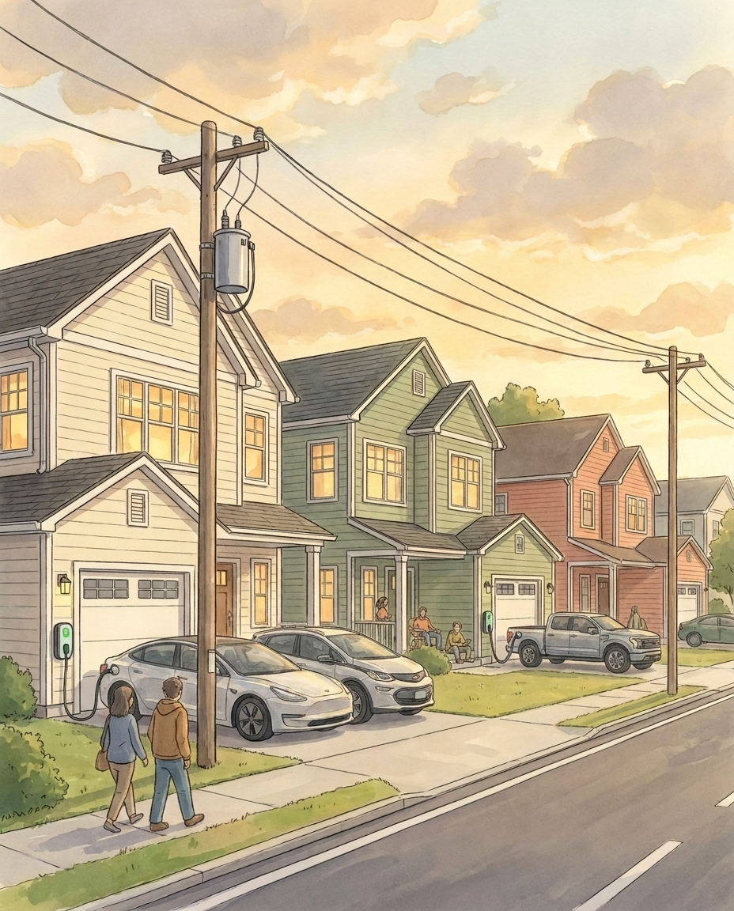
This is Pingfan.
Pingfan spent his PhD on battery electric vehicles, and on one deceptively simple question about them: when will they charge, and what does that timing mean for the electricity grid?
Answering it took three connected studies: one about people, one about the grid and its economics, and one about the research tools themselves.
The dissertation that resulted is long and full of equations. Most people will never read it. This book tells the same story in plain language.
Pingfan had not planned to pursue a PhD.
Then Professor John Paul “JP” Helveston reached out to him directly. JP had funding from the Alfred P. Sloan Foundation to study smart charging for battery electric vehicles, and Pingfan's background in engineering and data science looked like a match. The direction was unusual: students normally seek out advisors, not the other way around.
Their first conversation ran three hours, far longer than either had planned. By the end, the outline of a research agenda had taken shape: whether BEV owners would accept managed charging, what their participation would be worth to the grid, and what tools the research itself would require.
Those three questions became the dissertation.
The core problem is one of timing.
Battery electric vehicles cut transportation emissions, but their benefit depends on when they charge. Most owners plug in when they arrive home, so unmanaged charging stacks directly onto the evening peak, when household demand is already highest. Serving that combined peak means running the most expensive generators and, eventually, building capacity that sits idle the rest of the day.
Smart charging is the alternative: coordinate charging so it moves into the overnight hours, when demand is low.
Whether it can work turns on three questions. Will owners participate, and on what terms? How much peak reduction does it buy, and at what cost? And what research infrastructure does it take to find out?
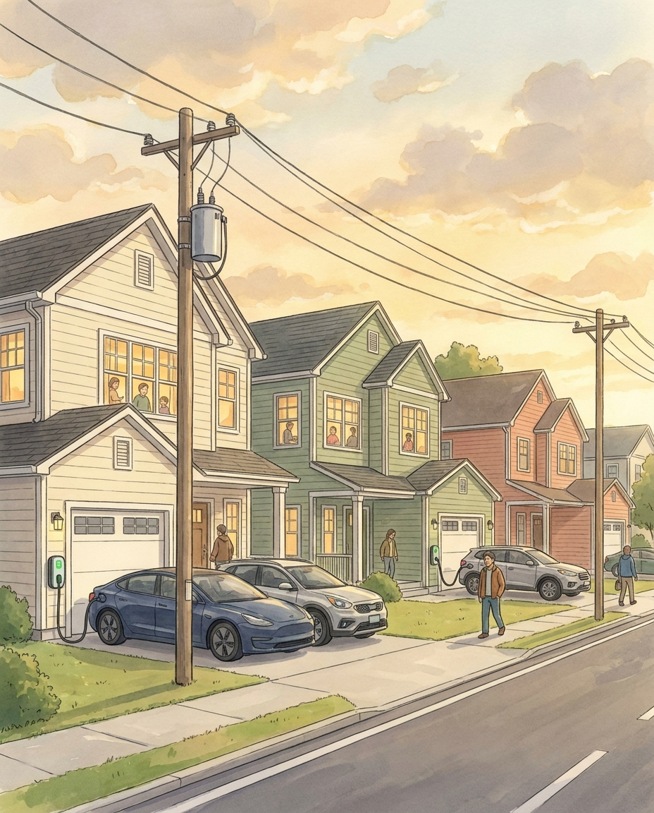
The first question, about participation, is where the dissertation begins.
Smart charging only works if vehicle owners agree to give up some control, so Study 1 examined the two program designs utilities actually offer. Under supplier-managed charging (SMC), the utility decides when charging happens but guarantees the vehicle reaches an agreed charge level by an agreed time. Under vehicle-to-grid (V2G), the vehicle also sends power back to the grid when needed, acting as distributed storage.
The two programs ask different things of an owner. SMC asks for patience with timing; V2G asks the battery to actively work for the grid, wear and all. There was good reason to expect owners to price those requests very differently.
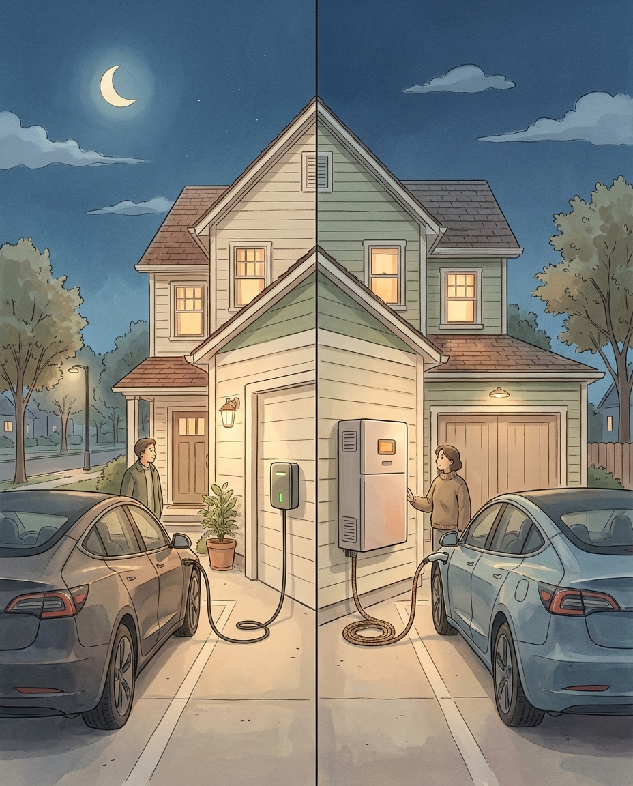
Whom you ask matters as much as what you ask.
Most earlier studies surveyed the general car-owning public, few of whom have ever charged an electric vehicle, let alone joined a smart charging program. Study 1 sampled differently: 1,356 current US BEV owners, recruited in 2024 through targeted social media ads and a market research panel.
A screening question did the quality control: respondents picked their vehicle from a list of 1,748 models spanning thirty years, of which only 77, or 4.4 percent, were battery electric. Without actually owning one, guessing right was unlikely.
These were people who knew exactly what charging involves; 682 of them completed the V2G questions as well.
You cannot ask people directly how much they value flexibility; nobody carries such a number around.
Study 1 instead used a discrete choice experiment. Each respondent faced a series of paired program offers, each defined by concrete attributes: a one-time enrollment payment, a recurring monthly payment, the number of times per month the owner could override the program, and guaranteed battery charge thresholds. They chose one program, the other, or neither, six times for SMC and six more for V2G.
Choices like these, repeated across randomized attribute combinations, let a logit model estimate how strongly each attribute moves the decision to participate. Trade-offs reveal what direct questions cannot.
The work was collaborative from the start.
The smart charging studies brought together researchers from several universities: Alan Jenn at UC Davis; Brian Tarroja, Kate Forrest, and Matthew Dean at UC Irvine; and Eric Hittinger at the Rochester Institute of Technology, who later served on Pingfan's dissertation committee. JP, as advisor and principal investigator, kept the whole effort pointed in the right direction.
Pingfan led the day-to-day research, but the questions spanned vehicles, grids, and surveys, and no single person knows all three equally well. The team did.
For supplier-managed charging, the results were encouraging, and a little surprising.
Owners cared less about money than expected, and more about operational flexibility: a guaranteed charge level by morning, and the ability to override when plans change. The guaranteed threshold mattered far more than the minimum: owners want range certainty, not control over the details.
Good flexibility with no payment reached at least 50 percent predicted enrollment. Recurring payments worked hardest: two to three dollars a month matched a one-time 65 dollars, roughly twenty to one.
People will share control of their charging. What they want in return is certainty that they will not be stranded.
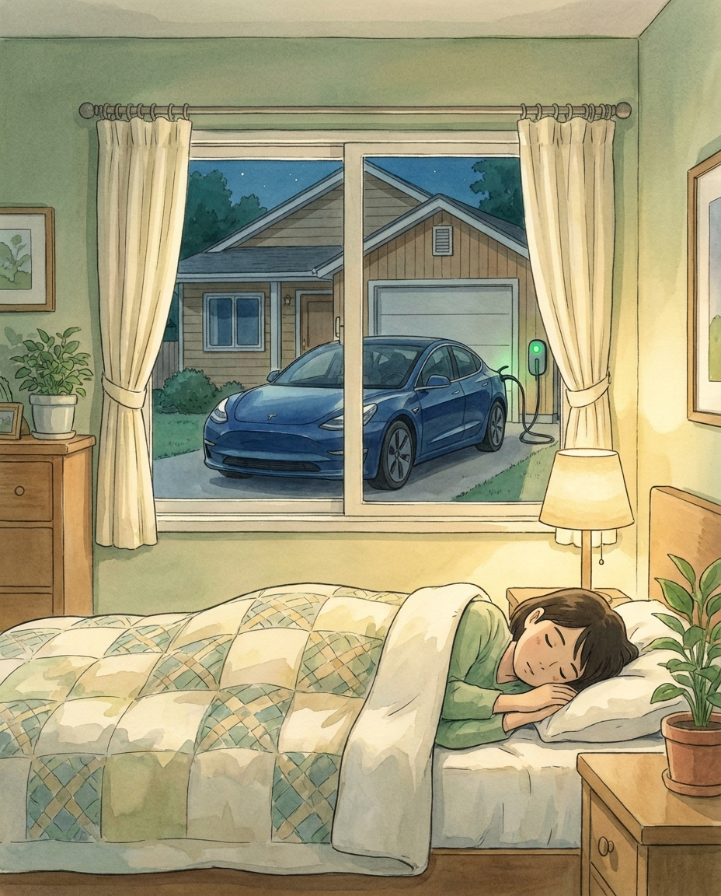
Vehicle-to-grid told a different story.
Sending power out of one's own battery is a larger request, and owners priced it accordingly: participation was far more sensitive to money than under SMC. Pay well per discharge event and enrollment climbs steeply; at 20 dollars per event, four events a month, the model predicts 82 percent enrollment.
The design implication is clean. SMC suits a simple subscription with modest recurring payments and strong guarantees; V2G is a market for discrete grid services, best paid per event.
The team also published an interactive enrollment simulator where utilities and policymakers can test a program and see its predicted participation.
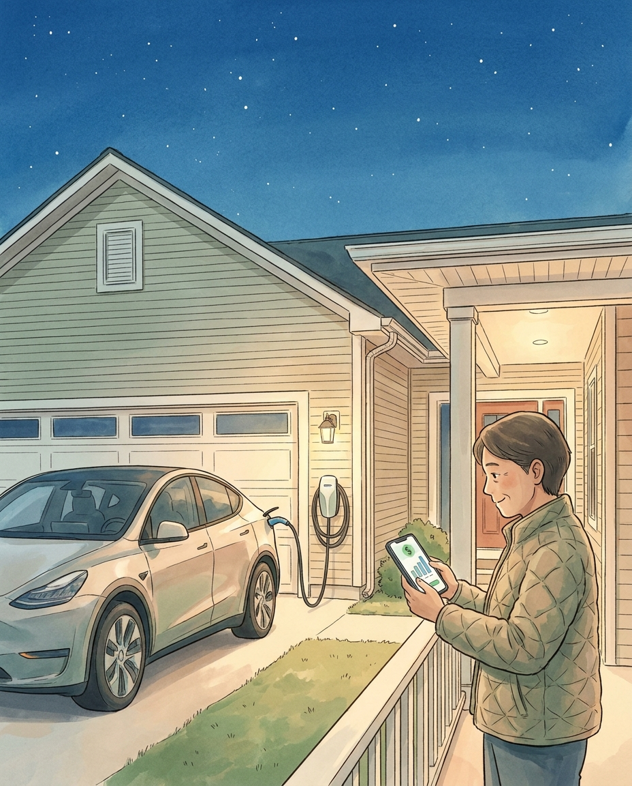
Stated willingness, however, is not yet grid value.
Study 1 established the terms on which owners would participate. Study 2 asked the two questions that determine whether a utility should act on those terms: how much does managed charging actually lower the evening peak, and does the arithmetic survive the cost of the incentives?
The economics were the heart of it. Every enrolled household must be paid, and the peak reduction has to be worth the total bill.
Study 2 connected the two halves empirically rather than by assumption.
The enrollment results from Study 1 became an enrollment curve: for any monthly incentive, the predicted share of owners who participate. That curve fed a year-long simulation of regional grids at 15-minute resolution, in which 10,000 vehicles following realistic travel patterns from the National Household Travel Survey drive, park, and charge, scaled up by Census household counts to full regional fleets.
Two regions anchored the comparison because their grids differ structurally: CAISO in California, solar-heavy with a deep overnight valley, and NYISO in New York, flatter, hydro-reliant, and winter-peaking.
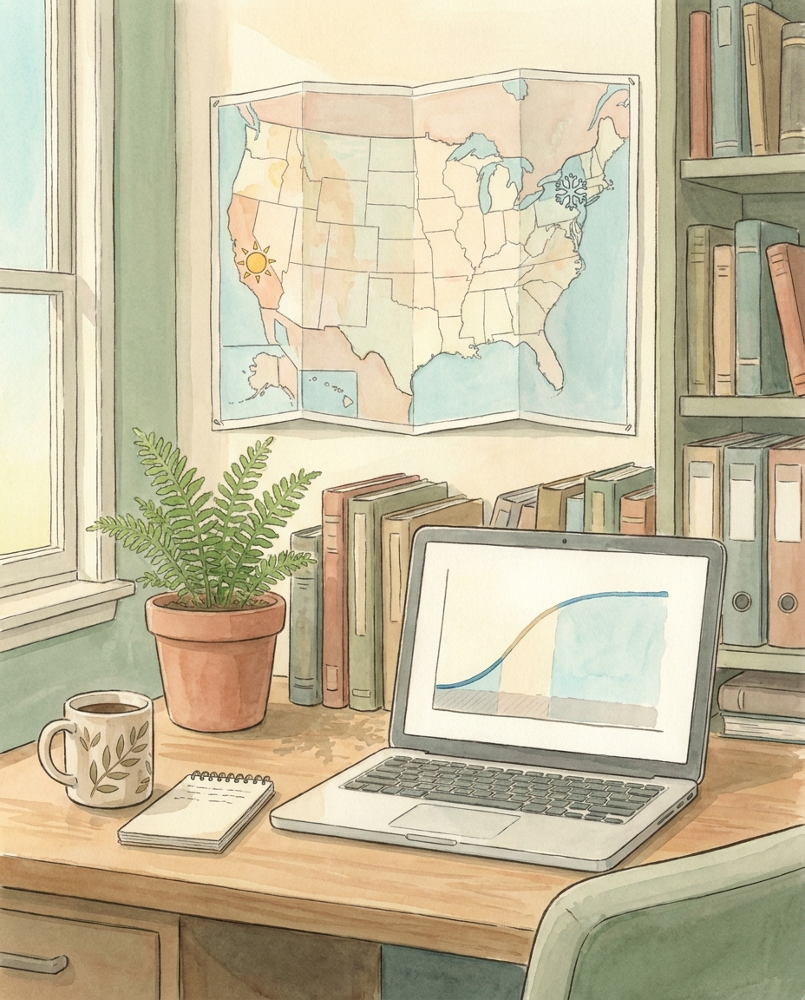
California's grid made the case vivid.
Its daily net load curve sags through the afternoon while solar generation carries the demand, then ramps steeply as the sun sets and households switch on. Engineers call it the duck curve, and the name is apt. The valley that follows the evening peak is deep and dependable, which is exactly the room that shifted charging needs.
The simulation moved charging out of the evening and into that valley. At full enrollment, CAISO's evening peak fell by 3.7 gigawatts, or 12.1 percent, on an annual-average day, and by up to 5.6 gigawatts on the most favorable day. NYISO, smaller and flatter, saw 1.6 gigawatts on the average day.
The physics works. The open question is the cost.
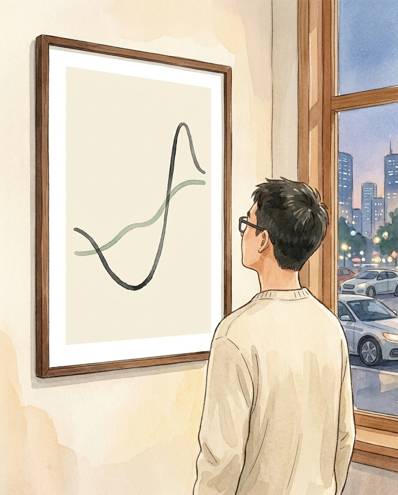
The cost side turns on one structural fact: every enrollee receives the same monthly incentive.
The enrollment curve is concave. About 30 percent of owners would participate with no payment at all; 20 dollars a month brings roughly 60 percent; reaching everyone requires about 85 dollars a month, paid to every household. Raising the incentive to attract the next participant means raising it for everyone already enrolled, so total program cost grows nonlinearly while the added peak reduction shrinks.
This is diminishing marginal returns, and in these programs it is sharp.
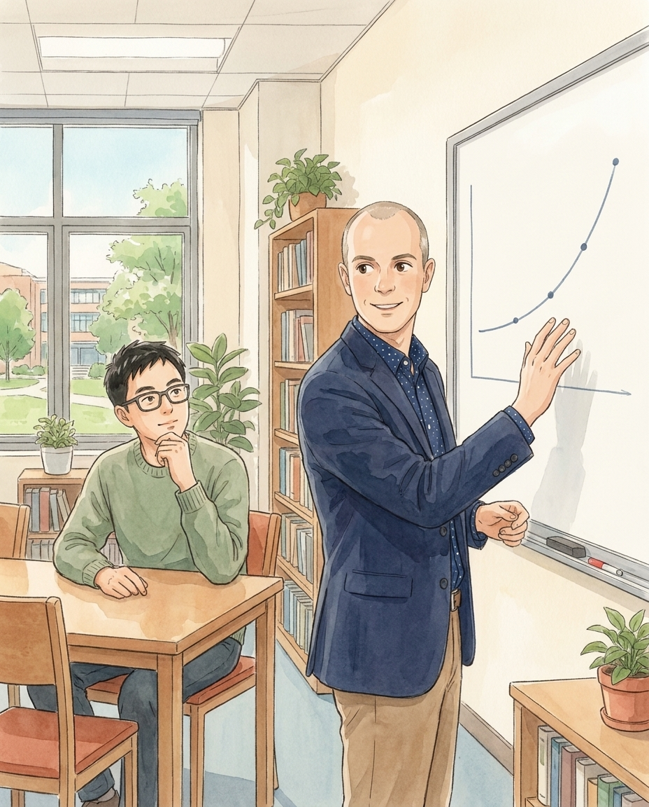
The practical answer is moderation.
Enrollment in the 30 to 50 percent range captured most of the achievable peak reduction at a small fraction of the cost of near-full participation. Beyond that range, each additional gigawatt of reduction becomes rapidly more expensive.
And past a threshold, more enrollment is not merely wasteful but counterproductive. On about 15 percent of CAISO days, concentrating too much charging in the overnight window reconstituted a new peak there. The mountain does not disappear; it moves.
Moderate, well-targeted enrollment is the cost-effective operating point. Maximum participation is not the goal.
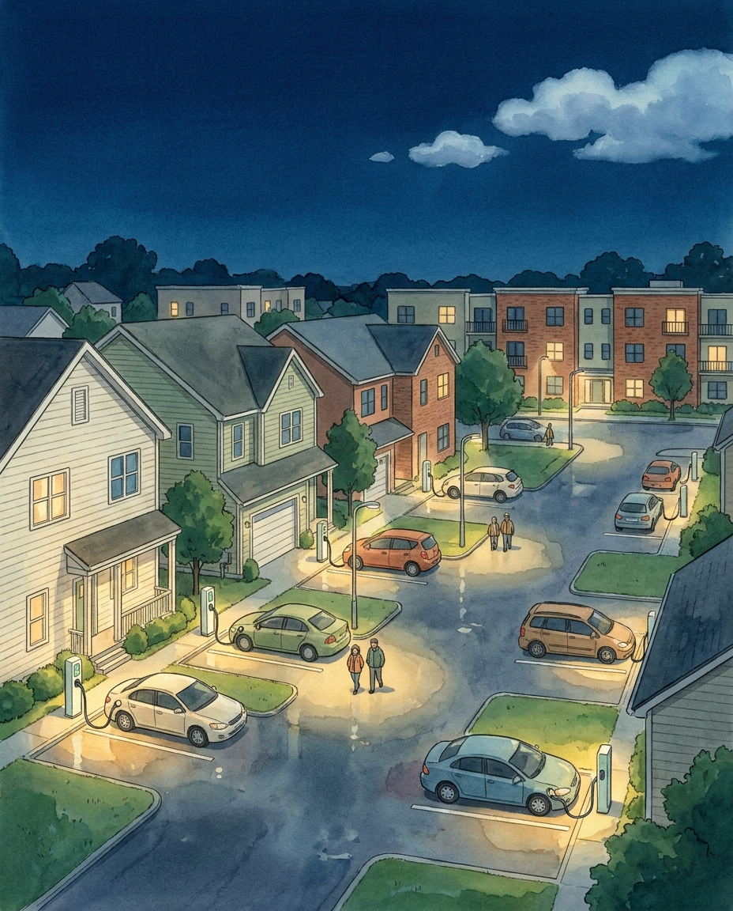
Region and season set the boundaries.
In CAISO, cost efficiency held essentially year-round, because solar keeps the gap between the evening peak and the overnight valley wide in every season. In NYISO, efficiency deteriorated in winter, when space heating keeps overnight demand elevated and compresses the very valley the program depends on.
The design lesson follows directly: a smart charging program is not one product to deploy uniformly, but a schedule to be tuned to each region's net load shape.
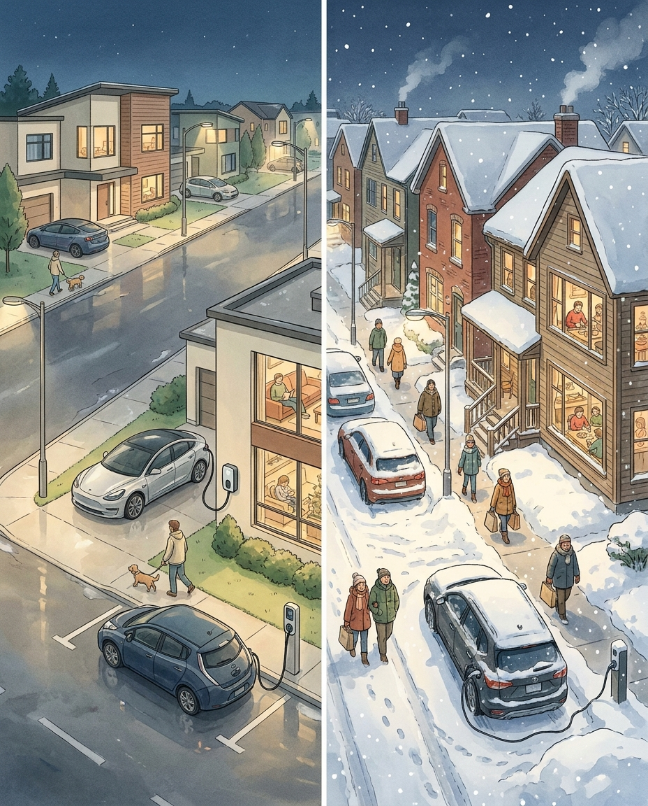
Study 3 began as friction inside Study 1.
Fielding a careful experiment on 1,356 people requires serious survey software, and the existing options each failed in a familiar way. Commercial platforms were capable but expensive and closed. Free tools were easy but limited. And almost none treated a survey as something a researcher could version, share, review, and reproduce exactly, years later, the way code and manuscripts are treated.
For reproducible research, that is not an inconvenience; it is a methodological gap. The team decided to close it themselves.
The result is surveydown, an open-source survey platform built in R.
Instead of assembling questions by clicking through a web interface, a researcher writes the survey as plain text, markdown with R code, and surveydown renders it as a live web survey. It stands on three mature open-source technologies: Quarto for the document, Shiny for the interactive application, and PostgreSQL for response storage.
Bogdan Bunea, an Engineering Management and Systems Engineering undergraduate in the lab, built the database layer that stores responses safely. The platform is free, open-source, and distributed on CRAN under an MIT license.
Plain text sounds like a modest design choice. It carries the platform's three main advantages.
First, reproducibility: a survey that lives in text files can be version-controlled, shared, audited, and re-run identically, which proprietary click-built surveys cannot.
Second, programmability: because real code executes while the survey runs, it supports conditional display, skip logic, randomization, and fully custom experimental designs, including the choice experiment in Study 1.
Third, data ownership: the survey application, its hosting, and its response database are deliberately separated, so researchers keep full control of their own data rather than renting access to it.
surveydown outgrew the lab that built it.
It has accumulated thousands of downloads on CRAN and is now used by researchers well beyond transportation: public health, economics, education, and policy among them. Community contributors have extended it, including translations into six languages, and a companion tool, sdstudio, is in development to add a graphical interface without giving up reproducibility.
What began as a workaround for one experiment has become shared research infrastructure.
Read together, the three studies form one argument.
Study 1 measured, from 1,356 owners, the terms on which people will participate in managed charging. Study 2 carried those measured preferences into grid simulation and returned an operating rule: target moderate enrollment, tuned to the regional grid, because that is where the benefit is large and the cost is small. Study 3 built the open instrument that made the measurement possible, and left it to the field.
Consumer behavior, grid economics, and research infrastructure: each study answers the question the previous one exposed.
The dissertation also states plainly what it cannot yet claim.
Stated preferences overstate real behavior: deployed pilot programs today enroll only 4 to 10 percent of eligible owners, far below the modeled optimum, and closing that gap with revealed-preference data is the clearest next step. The simulations cover detached single-family homes with home charging; apartments, workplaces, and public charging remain open questions. V2G still needs the same cost-efficiency treatment SMC received. And sdstudio must mature before surveydown fully serves researchers who do not code.
Each of these is a research program of its own. That is how the work continues.
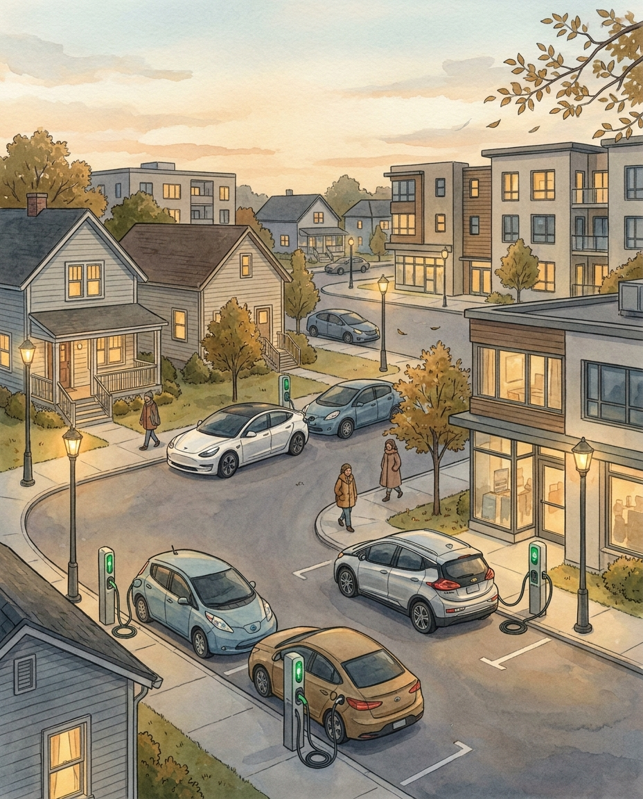
A PhD confers skills, and Pingfan leaves with a full set: choice modeling, grid simulation, data science in R, and the craft of building research software.
But the larger inheritance was a mindset, learned from JP across four years: take ownership of the work, never give up on a hard problem, and treat every project as part of a larger system, with origins and consequences beyond itself.
None of it was done alone. His committee and collaborators sharpened every study; the Helveston Lab made the years good ones; the Alfred P. Sloan Foundation funded the work and welcomed its unexpected software offshoot; and his parents, his friends, and above all his wife carried him through.
To all of them, thank you.
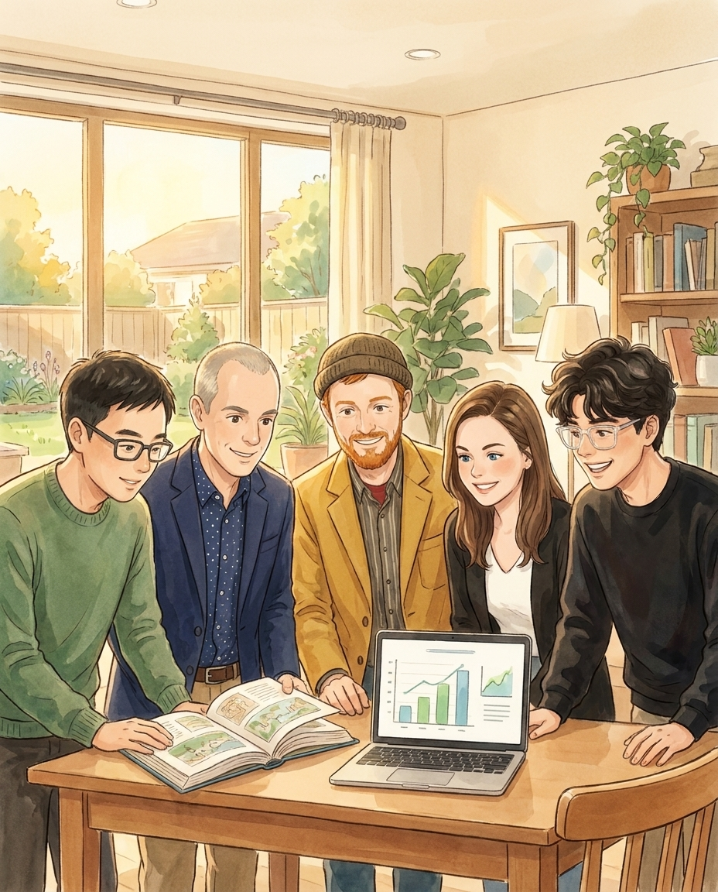
That is the story of a million cars coming home, and of what four years of research says about when they should charge.
The full dissertation is called:
Sustainable Transportation, Sustainable Research: Consumer Adoption and Grid Peak-Shaving of Battery Electric Vehicle Smart Charging, Inspiring the surveydown Open-Source Survey Platform
It contains the complete methods, models, and results, and you are warmly invited to read it.
Pingfan Hu, PhD
George Washington University, 2026
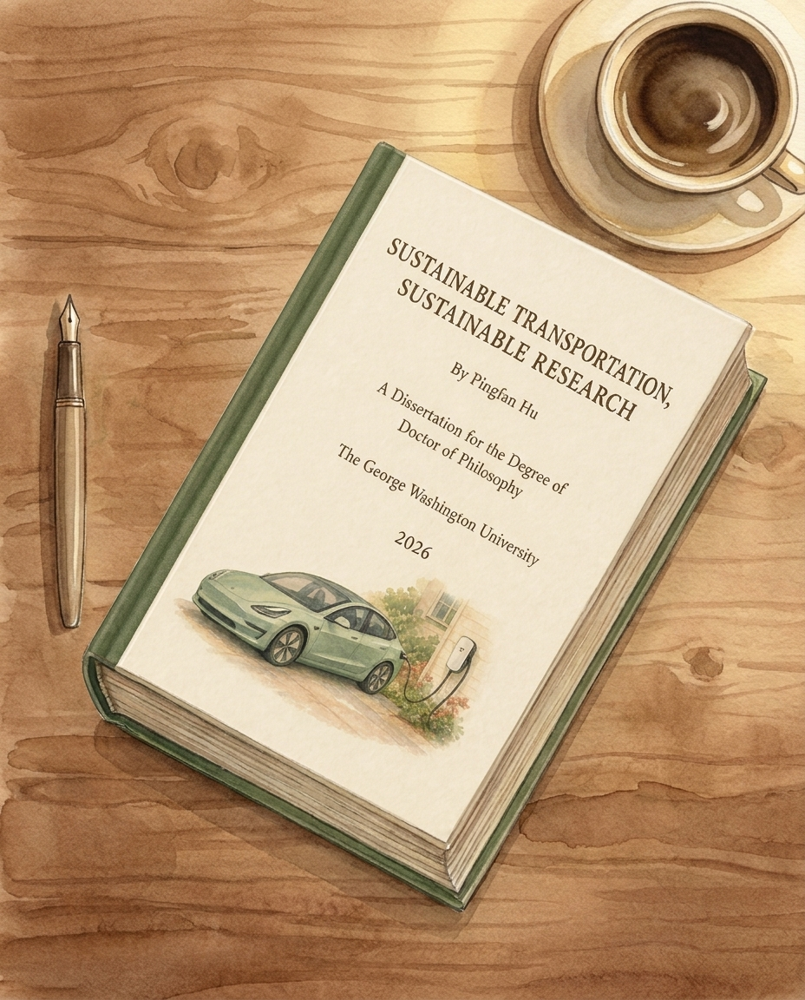